<div id="panel-control" style='
    position: fixed;
    bottom: 50px;
    left: 10px;
    background-color: #1f2d3d;
    padding: 15px;
    border-radius: 8px;
    color: white;
    font-family: "Segoe UI", sans-serif;
    box-shadow: 0 0 10px rgba(0,0,0,0.3);
    z-index: 1000;
'>
  
  <div style="font-size: 18px; font-weight: bold; margin-bottom: 10px; text-align: center;">
    EL GRAN PAISAJE CHACO - PANTANAL
  </div>

  <div id="btn-protegidas" class="boton-capa" onclick="seleccionarBoton(this, 'protegidas')">
    <div style='font-size: 16px; font-weight: bold;'>AREAS PROTEGIDAS</div>
  </div>

  <div id="btn-municipios" class="boton-capa" onclick="seleccionarBoton(this, 'municipios')">
    <div style='font-size: 16px; font-weight: bold;'>MUNICIPIOS</div>
  </div>

  <div style="font-size: 14px; margin-bottom: 0px; text-align: center">
    Desarrollado por Matías López Bertram.
  </div>
</div>

<style>
  .boton-capa {
    background-color: #2f3e4e;
    padding: 10px;
    margin-bottom: 10px;
    border-radius: 6px;
    cursor: pointer;
    transition: background-color 0.3s;
  }

  .boton-capa.activo {
    background-color: #007bff;
  }
</style>

<script>
  function seleccionarBoton(elemento, capa) {
    // Quitar la clase activa a todos los botones
    var botones = document.getElementsByClassName('boton-capa');
    for (var i = 0; i < botones.length; i++) {
      botones[i].classList.remove('activo');
    }

    // Activar el botón clicado
    elemento.classList.add('activo');

    // Mostrar la capa correspondiente
    mostrarCapa(capa);
  }
</script>
